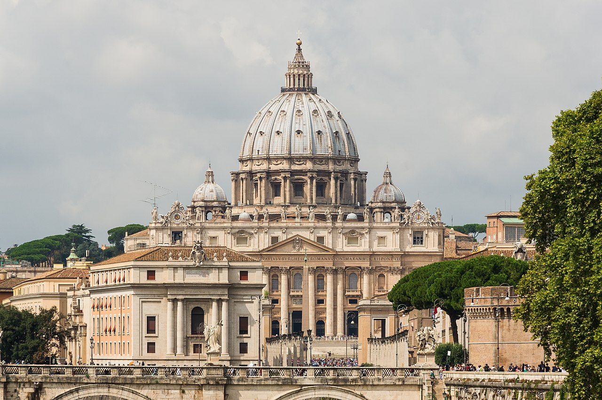

Proceso y Ceremonia de Beatificación

El Padre Ignacio Casanovas Perramont fue solemnemente beatificado por S.S. el Papa San Juan Pablo II el 1 de octubre de 1995 en la Basílica de San Pedro del Vaticano.
Formó parte de la causa colectiva de los Mártires Escolapios de España, reconocidos como testigos verdaderos de Cristo que prefirieron sellar su fe con el martirio antes que renegar de su vocación sacerdotal y pedagógica.
Significado Eclesial y Litúrgico
- Memoria Litúrgica: Se celebra anualmente cada 16 de septiembre en el santoral de la Iglesia Católica y de la Orden de las Escuelas Pías.
- Hallazgo e Incorrupción: En 1948 sus restos mortales fueron hallados e identificados incorruptos, encontrándose entre sus vestiduras su santo rosario.
- Ejemplo Escolapio: Su vida constituye un testimonio permanente de fidelidad evangélica, amor a la juventud y devoción filial para la familia calasancia en todo el mundo.